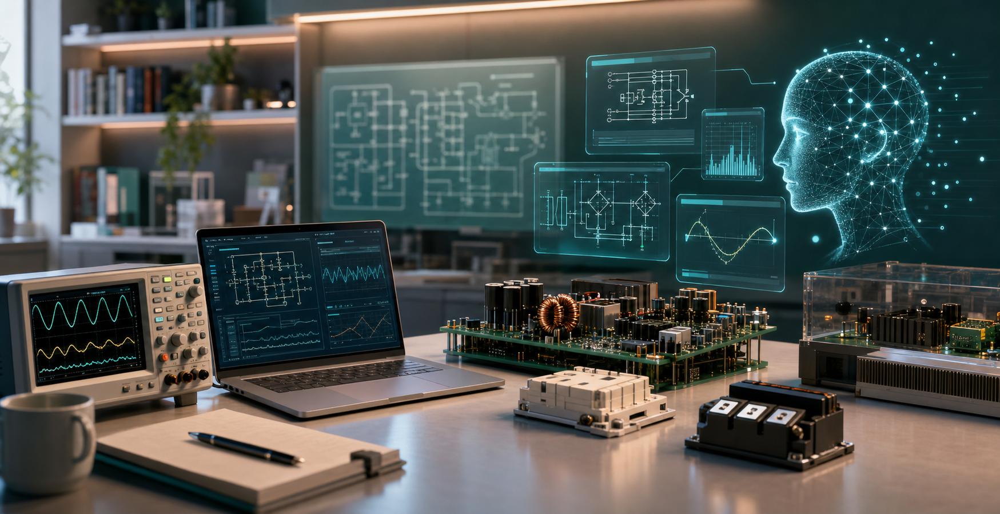

Orientation
What power electronics is, why it matters, and where converters appear in chargers, EVs, solar, batteries, servers, motors, and the grid.

Open-source power electronics education
A structured, AI-native path that helps learners move from basic electricity to real power electronics systems through guided study, simulation, and projects.
The idea
This project turns power electronics into a public learning system: seven ordered stages, practical exercises, AI tutor prompts, and community-maintained knowledge that a motivated student can follow from zero to advanced work.
Syllabus
What power electronics is, why it matters, and where converters appear in chargers, EVs, solar, batteries, servers, motors, and the grid.
Voltage, current, energy, circuit laws, capacitors, inductors, waveforms, measurement, and the math needed for engineering thinking.
Passive parts, semiconductors, datasheets, parasitics, packages, thermal limits, and the difference between ideal models and real devices.
Buck, boost, flyback, bridge topologies, PWM, ripple, efficiency, and switching behavior.
Averaged models, small-signal thinking, transfer functions, Bode plots, feedback, compensation, stability, and digital control awareness.
Magnetics, gate driving, isolation, protection, switching loss, EMI, thermal design, measurement artifacts, and layout influence.
Motor drives, EV power, solar inverters, chargers, UPS, storage, server power, grid converters, reliability, and product tradeoffs.
AI-native workflow
Community
The project can grow through tutorials, diagrams, simulations, design reviews, project briefs, safety notes, and AI prompt templates. Every contribution should help a learner become more capable.